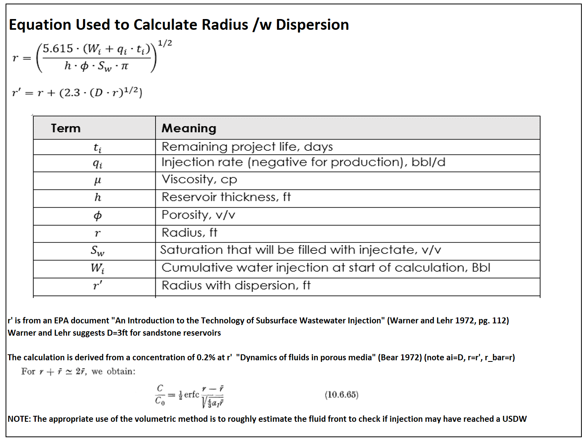

ZEI Calculation - Warner and Lehr
Volumetric method to estimate fluid front and USDW proximity.
Calculation Results
Calculated Radius (r)
— ft
Radius w/ Dispersion (r')
— ft
Note: r' calculation is derived from Warner and Lehr (1972) and Bear (1972).
Reference - Equations and Terms
